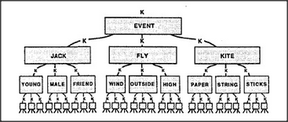

If each K-line can connect to other K-lines, which, in turn, connect to others, then K-lines can form societies. But how can we make sure that this can serve our purposes, instead of becoming a great, disordered mess? What could guide them into representing useful hierarchies like these?
To keep things orderly, we'll now apply that level-band idea again. Remember that we first invented K-lines to link older agents together; then we invented level-bands to keep those K-lines from filling up with too much useless, unrelated stuff. Now we have the same problem again: when connecting new K-lines to old ones, we must keep them from including too much inappropriate detail. So why not try the same solution? Let's apply the level-band idea to the K-line trees themselves!
When making a new K-line memory, do not connect it to all the K-lines active at the time but only to those that are active within a certain level-band.
It might be supposed that this idea would be hard to apply unless we specify what level means. However, something like this will happen automatically, simply because the new K-line societies will tend to inherit whatever hierarchy already existed among the original agents that become connected to those K-lines. We've actually seen two different ideas about this. In our Kite example, we talked about a description's level of detail. That is, we regarded it as more elevated to talk about a sheet stretched across a frame than to discuss the paper or the sticks themselves. In our Builder example, we talked about goals and considered the Tower Builder agent itself to be a level above the agents it exploits to solve its subproblems — agents like Begin and Add and End.
This policy of connecting new K-lines to old ones must be used in moderation. Otherwise, no new agents would ever be included in our memories. Furthermore, it should not always be required to produce simple, orderly hierarchy-trees; for example, in the case of Builder, we found that both Move and See will often need one another's help. Eventually, all of our knowledge-structures become entangled with various sorts of exceptions, shortcuts, and cross-connections. No matter: the level-band idea will still apply in general, since most of what we know will still be mainly hierarchical because of how our knowledge grows.